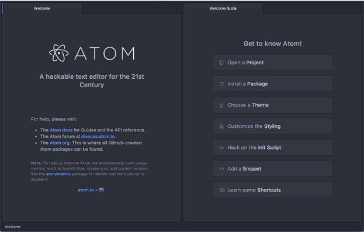
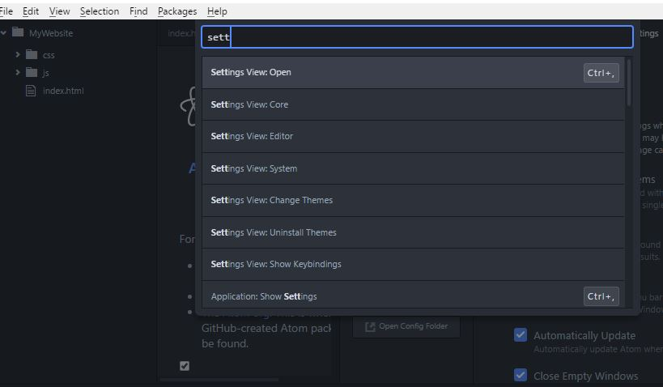
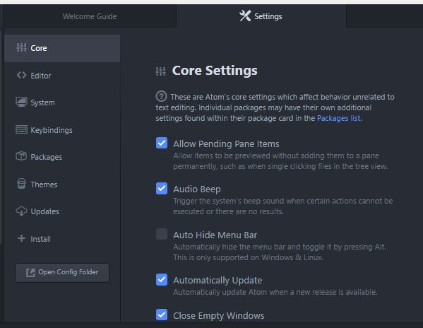
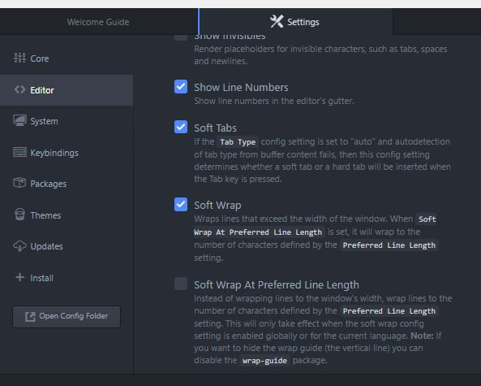
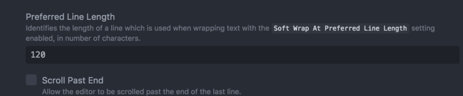
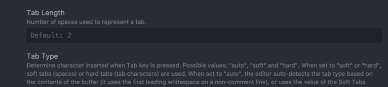
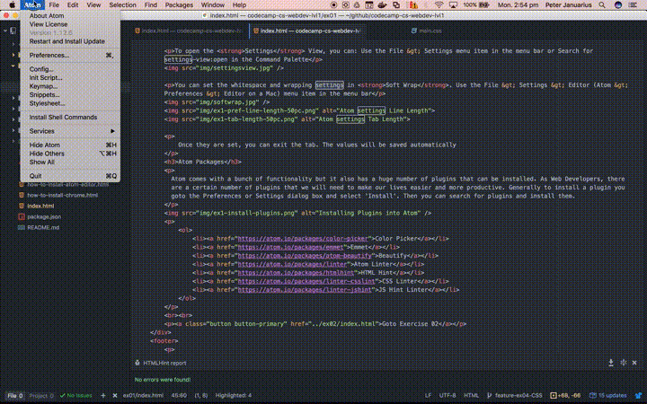

Hi and welcome to Codecamp! You may or may not have had some experience with programming before. If not then don't panic. We will try and go at a pace that suits everyone. If you have installed Chrome and Atom then you are
ready to go. If not then please see our instructions on installing Chrome and installing Atom, go and do that and then come back here.
Right - done that? Before we start the course proper, we would like you to have a play with Atom and Chrome. In this pre-course exercise we are going to setup Atom and Chrome. Oh and by the way, if you hadn't already realised, you
should be viewing this page in Chrome! So make sure you are doing this before you move on.
You must ensure at this point that you are viewing this page in Google Chrome. No Internet Explorer, Firefox, Safari or Opera!
The objective of this preparatory exercise is to get you familiar with the Atom editor and the Chrome browser. To program in HTML all you need is a basic text editor and a browser. Mostly any browser will do, however we will be using Chrome for the duration of the workshop. Let's spend some time getting aquainted with Atom.
When you first starup Atom, you will get a screen that looks like this.
Open the Command Palatte using Ctrl+Shift+P, (⌘+Shift+P on a Mac). This is a search-driven menu to look for something. With this, you can quickly search through thousands of commands
To open the Settings View, you can: Use the File > Settings (Atom > Preferences on a Mac) menu item in the menu bar or Search for settings-view:open in the Command Palette
You can set the whitespace and wrapping settings in Soft Wrap. Use the File > Settings > Editor (Atom > Preferences > Editor on a Mac) menu item in the menu bar
  Once they are set, you can exit the tab. The values will be saved automatically
Atom comes with a bunch of functionality but it also has a huge number of plugins that can be installed. As Web Developers, there are a certain number of plugins that we will need to make our lives easier and more productive. Generally to install a plugin you goto the Preferences or Settings dialog box and select 'Install'. Then you can search for plugins and install them.
We recommend that you install the following plugins now:
Atom is configured. We are going to leave it for now and take a look at what Chrome can do to help us as Web developers.
Goto Exercise 02 - Chrome Setup